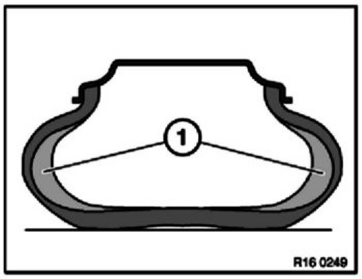
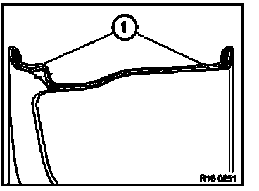
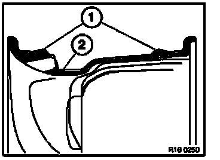
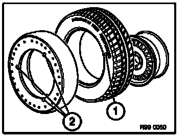
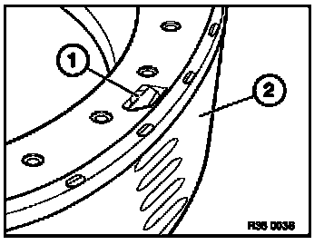

Comparison Standard Tires / Self-Supporting Tires
Comparison standard tyres/self-supporting tyres
Standard tyres unpressurised

Self-supported tyres, unpressurised

Envulcanised reinforcement (1) made of a temperature-resistant rubber compound.
H2 disc wheel (standard disc wheel) for emergency running system with integrated support ring

1 Hump 2 of standard disc wheel
EH2 disc wheel for emergency running system with self-supporting tyre

1 Extended Hump 2 of disc wheel
2 Drop centre relocated a few millimetres to the centre (precentring on outside)
Note: The new EH2 disc wheels (extended Hump 2 inner and outer) will be used more frequently on BMW vehicles in the future as they can also help to delay standard tyres from being lost in the event of a drop in tyre pressure.
Example: from current 1.1 bar to 0.6 bar (X5 or Landrover disc wheel)
Emergency running system with integrated support ring
(In the future primarily on heavy safety vehicles)
The support ring is made of a high-strength resilient plastic and is fitted on the disc wheel inside the tyre. The support ring can only be removed using special tools which have been specially approved by BMW. It can only be removed after destroying the tyre.
Emergency running systems with integrated support ring are used in particular on heavy safety vehicles. They allow the vehicle to be driven away from a potential danger without dropping speed even if the tyres have suffered a complete loss of pressure (flight situation).
It is possible as an option to have the tyre pressure monitored by an RDC system. The RDC is installed by pressing the components into the support ring before it is fitted.
Wheel structure with integrated support ring
Emergency running support with integrated support ring

1 Tyre
2 Support ring
Installation location of RDC wheel electronic unit

1 Wheel electronic unit
2 Support ring
For further information on the subject of "Tyre pressure warning systems and tyres with emergency running characteristics", please refer to the vehicle Owner's Handbook.